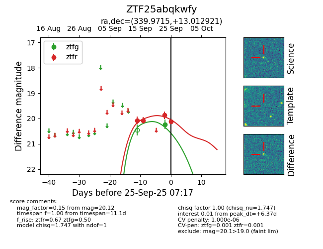
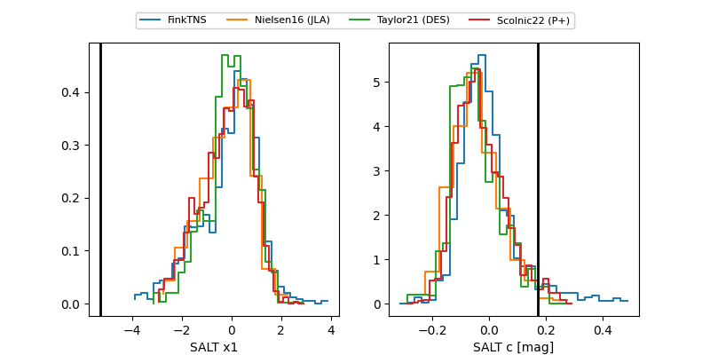

FINK: ZTF25abqkwfy
Lasair: ZTF25abqkwfy
ALeRCE: ZTF25abqkwfy
ZTF25abqkwfy (ztf,fink)
equatorial (ra, dec) = (339.9715,+13.01292)
galactic (l, b) = (80.2390,-38.71792)


last ztfg=20.23, ztfr=20.12
1 ztfg, 4 ztfr detections